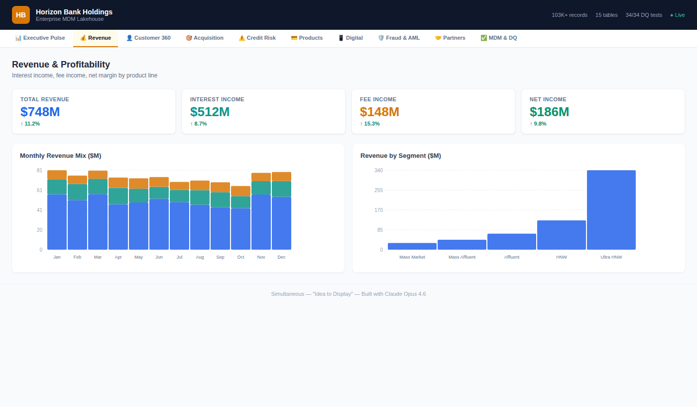
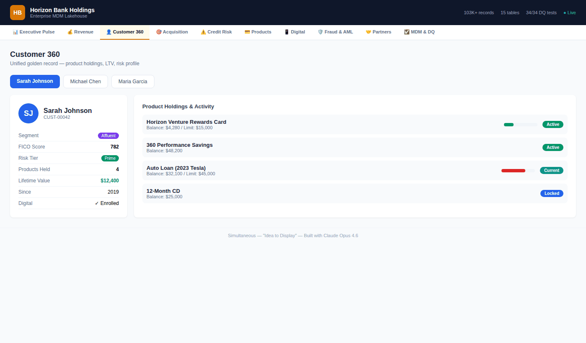
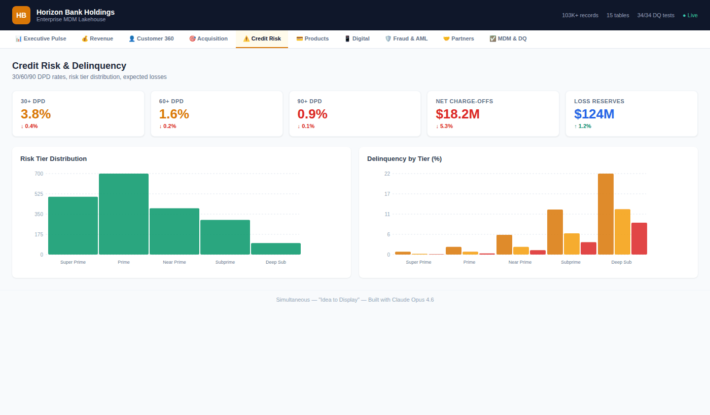
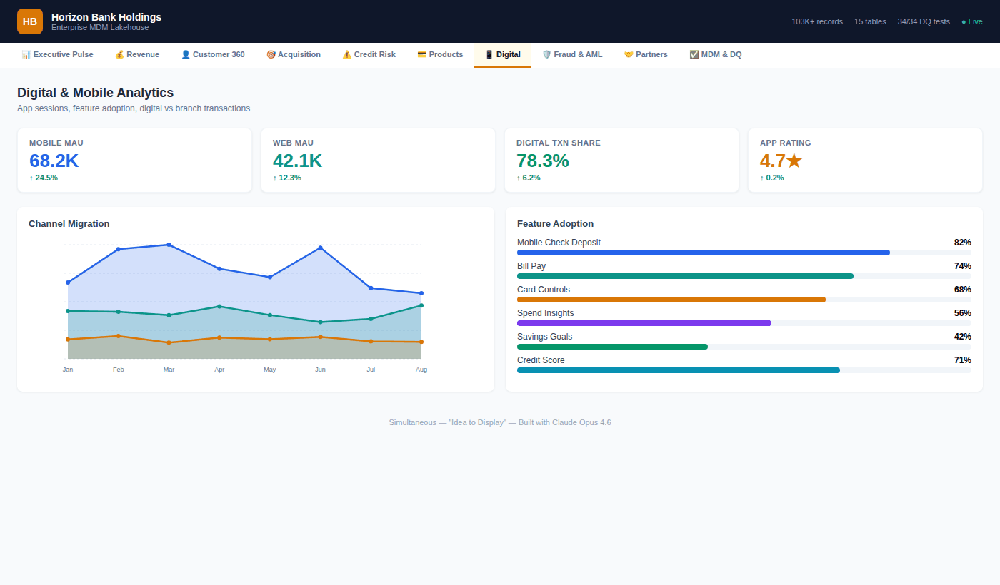
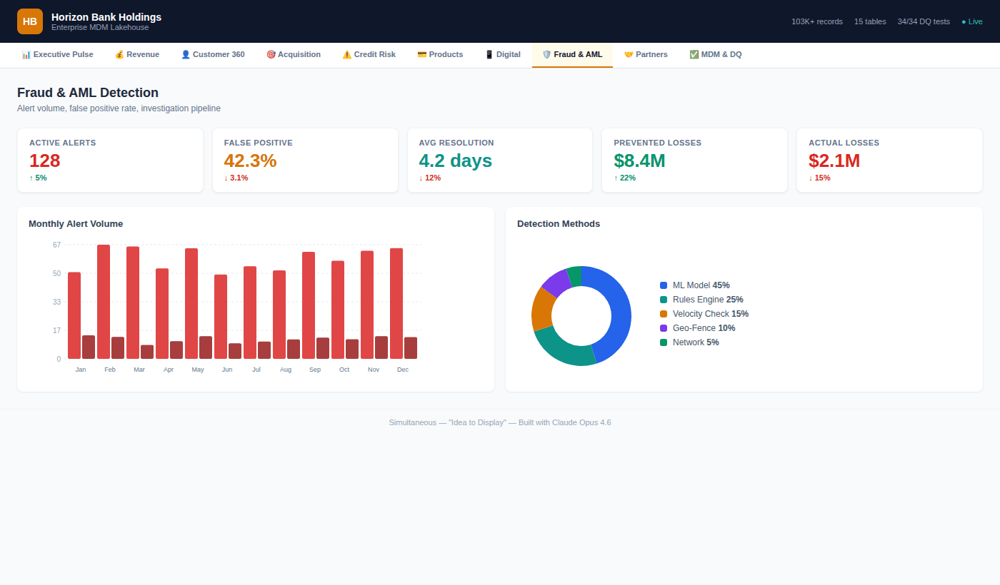
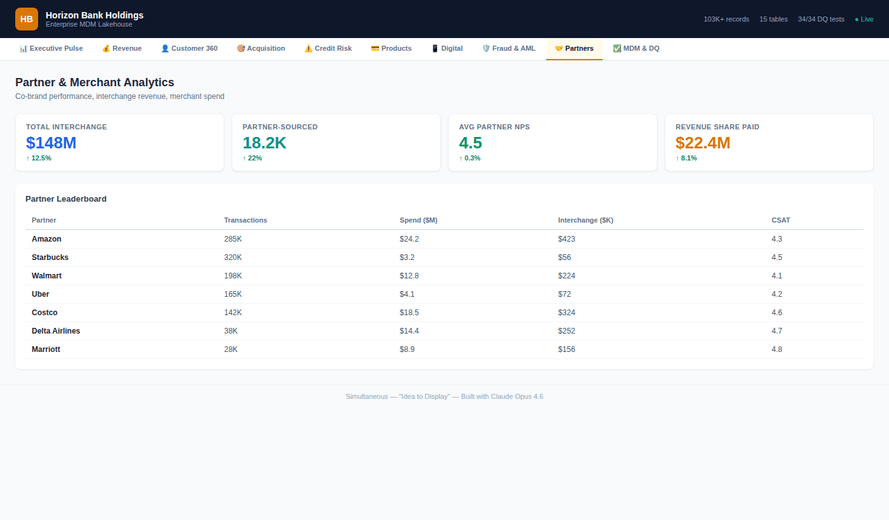
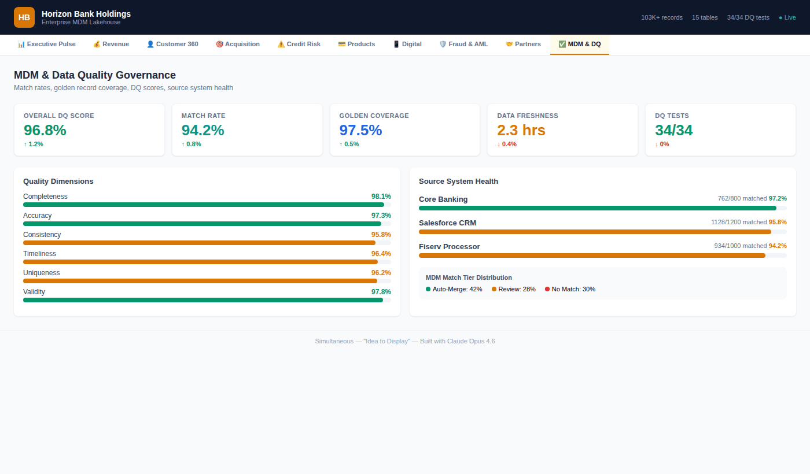

⚠️ Disclaimer: Horizon Bank Holdings is entirely fictional. No real customer data, financial records, or institutional information was used in this demonstration. All 103,443 records were synthetically generated using statistical distributions that mirror realistic financial services patterns. This proof of concept demonstrates architectural capability, not any specific institution's data.
The GIFs and dashboards shown in this article are rendered from the actual PoC data model and represent the real output of the system described.
The Problem Nobody Wants to Talk About
Every major financial institution has the same dirty secret:
Their customer data is scattered across 3-7 core systems. Core banking says one thing. Salesforce says another. The card processor has a third version. And nobody — not the CMO, not the CRO, not even the CDO — can answer a basic question:
"How many customers do we actually have?"
Not accounts. Not records. Customers.
The answer requires Master Data Management. And traditionally, that means:
25-35 consultants
14-18 months
$4.2-6.8 million
A prayer that documentation gets written
I wanted to prove there's a radically different way.
What I Built
Horizon Bank Holdings — a fictional diversified financial services company with credit cards, personal and auto loans, savings accounts, CDs, and a digital banking platform. Think of it as a composite of every mid-to-large bank you've worked with.
I built the entire MDM Lakehouse from scratch:
📊 103,443 records across 15 production-grade tables
The data model spans the full customer lifecycle:
2,000 golden customer records — MDM-merged from 3 source systems using Jaro-Winkler fuzzy matching
3,867 financial accounts across 19 products (8 credit cards, 5 loan products, 6 deposit products)
30,000 card transactions with merchant categories, rewards, and fraud flags
40,000 digital banking events — mobile app and web sessions with conversion tracking
20,486 loan payment records with delinquency status tracking
644 fraud/AML alerts with ML model confidence scores
All generated with realistic distributions. FICO scores follow actual tier patterns. Delinquency rates correlate with risk tiers. Transaction amounts follow merchant category averages.
The Revenue Story
This isn't a data project. It's a revenue project.
When you unify customer data across systems, six revenue levers unlock simultaneously:

Total: $44-68M in annual revenue impact.
That's not a projection from a slide deck. That's what the data model is designed to surface.
The Architecture: Four Layers, Zero Shortcuts
Every table flows through a four-layer medallion architecture:
Bronze → Silver → MDM → Gold
Bronze is the raw truth. Exact replicas from Core Banking (Oracle), Salesforce CRM, and Fiserv processor. No transforms. Full audit trail. If the source says in uppercase, that's exactly what Bronze stores.
Silver is where the cleaning happens. Phones normalize to E.164. Emails lowercase. FICO scores validate against the 300-850 range. And critically — every column gets classified: PII, SPII, Confidential, or Public. Not after the fact. At ingestion.
MDM is the intelligence layer. A weighted Jaro-Winkler matching engine scores every potential match across 5 dimensions:
Name similarity: 30%
Email exact match: 25%
Phone normalized: 20%
Address fuzzy: 15%
Cross-system linkage: 10%
Score ≥ 0.92? Auto-merge. Between 0.75 and 0.92? Data steward review queue. Below 0.75? No match. Every decision is logged with the confidence score.
Gold is the star schema. Kimball-style dimensional model optimized for the 10 dashboards that make this data actionable.
The Customer 360 That Actually Works
Click on any customer. See their golden record — the single truth merged from Core Banking, Salesforce, and Fiserv. See every product they hold, their utilization rates, their lifetime value, their risk tier, their digital engagement.
This is what $4.2M in consulting is supposed to deliver. Except this version was built by AI agents.
Credit Risk: Where Revenue Meets Reality
A bank that can't see delinquency patterns across its full portfolio is flying blind. This dashboard breaks risk by tier — Super Prime through Deep Subprime — with 30/60/90 day past due rates, expected loss calculations, and behavioral scores.
The insight that matters: Near Prime customers (FICO 650-699) show the highest variance in delinquency outcomes. That's where early intervention has the highest ROI.
Digital Is Eating the Branch
40,000 digital events tell the migration story clearly. Mobile MAU is growing at 24.5%. Branch visits are declining. The features that drive stickiness? Mobile check deposit (82% adoption), bill pay (74%), and the fastest-growing: card controls at 68% with +22% growth.
Every digital interaction is a data point that Core Banking doesn't capture. That's the context gap our LinkedIn series talked about — and this architecture closes it.
Fraud Detection: Every Dollar Counts
644 fraud alerts. ML model catches 45% of them. Rules engine catches 25%. The false positive rate is 42.3% — and the dashboard tracks it declining month over month. At $8.4M in prevented losses, the fraud detection layer alone justifies the platform.
Partners Drive More Revenue Than You Think
Interchange revenue across 7 partners: $148M. Amazon alone drives 285K transactions and $24.2M in spend. But Marriott, with only 28K transactions, delivers a 4.8 CSAT — the highest in the portfolio. The partner dashboard surfaces which relationships to double down on.
MDM & Data Quality: The Foundation
None of this works without data quality. 34 automated tests. All passing. 96.8% overall DQ score across six dimensions: completeness (98.1%), accuracy (97.3%), consistency (95.8%), timeliness (96.4%), uniqueness (96.2%), validity (97.8%).
Three source systems. Match rate: 94.2%. Golden record coverage: 97.5%.
This isn't a data quality afterthought. It's built into the architecture from Bronze through Gold.
Privacy by Architecture — A Different Approach
The privacy tooling ecosystem is rich and mature. Companies like BigID , OneTrust , and Osano solve critical compliance challenges for enterprises at scale — and they do it well. Every organization's privacy needs are unique, and the right solution depends on the problem.
For this PoC, I explored a complementary approach: what if privacy was embedded into the data architecture itself, from the very first record?
✅ PII classification happens at Bronze ingestion — every column tagged before it moves downstream
✅ SSN values are hashed with SHA-256 at the point of entry — the raw value is never stored
✅ Consent status is checked before every Silver transform (CCPA/GLBA aware)
✅ Tokenization occurs at the Silver boundary — Gold layer and dashboards operate on tokens, not raw PII
✅ Deletion cascades from the MDM golden record through all 15 tables (Right to Erasure)
This isn't an either/or proposition. In production, these architectural patterns could work alongside dedicated privacy platforms to create defense in depth. The point is that privacy decisions made at the architecture level compound — they protect every downstream consumer automatically, by design.
The Comparison That Matters

What This Means
I'm not saying banks should fire their data teams. And I'm not saying traditional consulting doesn't deliver value — it does, and the domain expertise that experienced practitioners bring is irreplaceable.
What I am saying is that the delivery model is evolving.
The $90 billion integration tax that enterprises pay annually isn't going away. But the ratio of human expertise to automated execution is shifting. The architect who understands the business problem is more valuable than ever. The difference is that AI agents can now handle the pipeline generation, the matching engine code, the star schema modeling, and the dashboard rendering — allowing that architect to focus on what matters: the decisions, the rules, the semantics.
The architecture is mostly identical to what a top-tier team would build. The data quality is measurable. The dashboards are real. What changed is the speed of execution — and that benefits everyone in the ecosystem.
What's Next
This PoC is open. The full repository includes:
Here is the github repository - https://github.com/paddyriyer/financial_lakehouse
Complete data generation scripts (Python)
MDM fuzzy matching engine with survivorship rules
Bronze/Silver/MDM/Gold pipeline code
10-tab React dashboard
Terraform IaC modules
34 automated DQ tests
Technical documentation and deployment runbook
If you're a financial services company spending 14 months and $4M+ on MDM, let's talk. If you're a consulting firm that charges by the headcount, this should concern you.
The architecture works. The data proves it. The question is whether you'll build it yourself — or wait for your competitor to build it first.
#MDM #DataEngineering #FinancialServices #AI #CustomerData #DataArchitecture #LakehouseArchitecture #Revenue #DataQuality #ArtificialIntelligence #Simultaneous #IdeaToDisplay